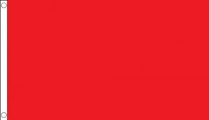
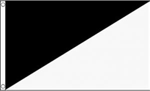
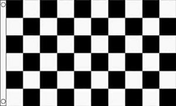
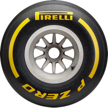

tipos de banderas
Ésta es la más habitual y, probablemente, la que menos se mencione. Indica que todo está transcurriendo con normalidad y no hay ningún incidente. Además, esta bandera se saca por sectores. Por tanto, su presencia solo significa que está todo bien en el sector en el que se encuentre, no en todo el circuito.
Esta bandera, que también va por sectores, aparece cuando hay un accidente que pone en riesgo de cierta forma a los demás pilotos. Por ejemplo, porque el coche del accidente quede cerca del trazado, porque haya piezas de fibra de carbono sobre el asfalto, Si un piloto se encuentra esta bandera, significa que puede seguir con su ritmo normal, pero teniendo especial cuidado y le queda terminantemente prohibido adelantar. A no ser, claro está, que un coche de delante ruede anómalamente despacio o se pare. Puede ir acompañada de las letras «SC», es decir, que sale el Safety Car y todos tendrá que aminorar la marcha y se juntarán rodando tras él.

En el caso de que haya habido un accidente mayor y se haya puesto la cosa realmente fea, se sacará bandera roja y todo se parará. Esto no significa que la carrera se cancele, ojo, solo que se detiene. Todos los coches vuelven a box y cuando vuelve todo a estar en regla, se reanuda la carrera con los pilotos en las posiciones en las que estaban antes de parar.También puede salir esta bandera roja por fuertes lluvias, por cierto, cuando la visibilidad es tan reducida que los pilotos apenas pueden pilotar y la seguridadse ve comprometida.
Esta bandera solo aparecerá en casos extremos, cuando directamente se decida cancelar el evento. Por suerte, en los últimos años la hemos visto muy poco, y es que esta bandera era la gran temida en otro tiempo, cuando los fuertes accidentes era probable que terminasen con la vida de los pilotos implicados.
A diferencia de las anteriores, esta bandera es individual para el piloto y no se aplica a todos en un sector. Lo que viene a decir es que el piloto al que se la enseñan tiene que dejar pasar al piloto que viene por detrás y que le va a doblar. Si eres nuevo en esto, te adelanto que la bandera azul es protagonista de muchas polémicas, sobre si la maniobra para dejar pasar no ha sido segura, si ni siquiera ha dejado pasar.

Esta bandera quizá no sea tan famosa como el resto, pero es bastante importante. Sirve a modo de advertencia a un piloto cuando hace algo antideportivo, pero no excesivamente grave. De tal forma que, si se repitiese algo similar y le volviesen a enseñar otra bandera negra y blanca, sería expulsado como si fuese una bandera negra.

La bandera de las banderas. La preferida de un piloto y la más honorable. Ésta es la bandera que ve el ganador de la carrera al pasar por línea de meta por última vez. Por cierto, todas están fijadas por la FIA, lo que significa que serán las mismas para todas las categorías. Oficialmente, tienen dos o tres banderas más, pero raramente se ven en F1 o ni siquiera se utilizan aquí.
Más banderas Ya sabes que la F1 funciona bajo el paraguas normativo de la FIA. Sin embargo, también hay ciertas modificaciones respecto a cualquier otra categoría que normalmente van enfocadas en aumentar el espectáculo y hacerlo más sencillo de entender para los espectadores. Por eso, quizá viendo otras carreras fuera de la Fórmula 1 te encuentres con unas banderas diferentes, como las de líneas rojas y amarillas.
Tipo de neumáticos
¿Qué decide cuál se elige y cuál se descarta? Pues lo exigente que sea el circuito. Si se prevé que los neumáticos no van a sufrir en absoluto, se escogen los más blandos (C3, C4 y C5). Si el circuito es muy agresivo con ellos, entonces se eligen los más duros (C1, C2 y C3). Y si el asunto está más equilibrado, entonces se escoge la gama media (C2, C3, C4).



Por lo tanto, en cada GP tendremos un neumático duro (blanco), uno medio (amarillo) y uno blando (rojo), con estas posibilidades:
Duro: C1, C2 o C3
Medio: C2, C3 o C4
Blando: C3, C4 o C5.
Neomaticos de lluvia
Aquí la cosa es más simple.Solo hay dos y se utilizará uno u otro en función de la cantidad de agua que haya en pista.
Los neumáticos intermedios se utilizan cuando la pista está mojada con una capa muy fina de agua o cuando hay zonas secas y zonas mojadas. Ten en cuenta que hay circuitos tan largos que es habitual tener una parte mojada y otra seca; en estas condiciones, son mejores los intermedios. Por otra parte, si la pista está empapada por todas partes y con una capa de agua importante, entonces los de lluvia extrema son los más apropiados, porque son capaces de evacuar más agua.
Colores de los neumáticos
Como resumen de este lío, cada neumático tiene su propio color:
Duro: blanco
amarillo
Blando: rojo
Intermedio: verde
Lluvia extrema: azul
Reparticion de puntos
Reparticion de puntos por posicion:
1º: 25 puntos
2º: 18 puntos
3º: 15 puntos
4º: 12 puntos
5º: 10 puntos
6º: 8 puntos
7º: 6 puntos
8º: 4 puntos
9º: 2 puntos
10º: 1 punto
Significado de las siglas
Siglas de clasificacion y estado de carrera
DNF (Did Not Finish):Indica que un piloto no terminó la carrera.
DNS (Did Not Start):Significa que un piloto no inició la carrera.
SC (Safety Car):Es un coche de seguridad que entra en pista para neutralizar temporalmente la carrera.
VSC (Virtual Safety Car):Es un modo en el que los pilotos deben reducir la velocidad y mantenerla controlada en todo el circuito, a menudo debido a la presencia de escombros en pista.
Siglas de componentes del coche:
DRS (Drag Reduction System): Es un sistema que permite al piloto reducir la resistencia aerodinámica abriendo una aleta móvil en el alerón trasero para facilitar los adelantamientos.
MGU-K (Motor Generator Unit - Kinetic):Es una parte de la unidad de potencia que convierte la energía de frenado en electricidad para recargar las baterías y, a su vez, puede entregar esa energía para acelerar el coche.
MGU-H (Motor Generator Unit - Heat):Transforma la energía térmica del sistema de escape en energía eléctrica para recargar las baterías o para alimentar el MGU-K.
términos relevantes:
HANS (Head And Neck Support):Es un dispositivo de seguridad obligatorio para los pilotos que se sujeta al casco para proteger el cuello y la cabeza en caso de accidente.
Q1, Q2, Q3:Son las tres partes de la sesión de clasificación, donde los pilotos luchan por conseguir el mejor tiempo para determinar el orden de salida de la carrera.